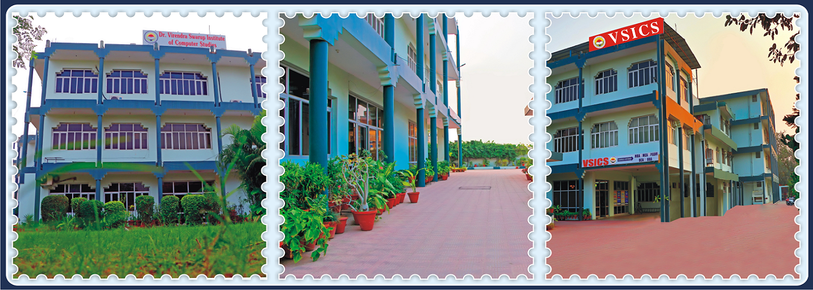
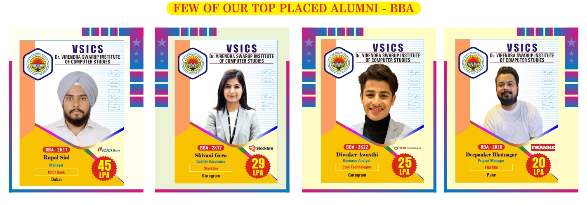
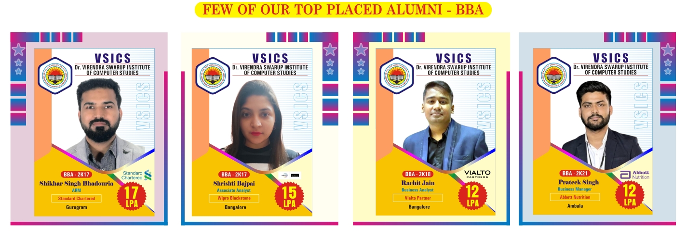
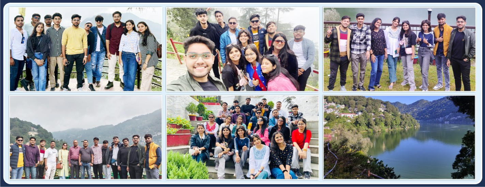
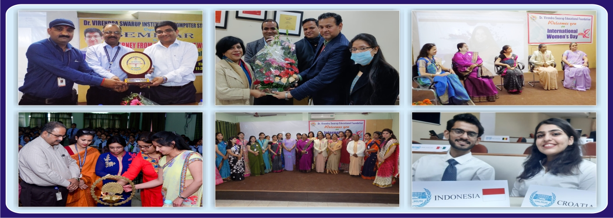

28+
Years of Excellence

Years of Excellence
Total Student Intake
Recruiting Partners
Placement Support Coverage
Dr. Virendra Swarup Educational Foundation, Uttar Pradesh (VSEF), was established in 1989 in memory of Late Dr. Virendra Swarup, MLC and former Chairman of Uttar Pradesh Legislative Council. Dr. Virendra Swarup Institute of Computer Studies is a part of VSEF, which also manages 10+2 schools across Kanpur and other cities of Uttar Pradesh.
VSEF is a sister concern of Dayanand Siksha Sansthan, Uttar Pradesh, which manages more than 25 postgraduate and intermediate colleges in Uttar Pradesh and Uttarakhand. VSICS was the first self-financed institute in Kanpur to impart computer education through MCA.
In more than 28 years, VSICS has emerged as a center of excellence. MCA, MBA, BCA and BBA programs are designed to build strong IT and management professionals.
UG and PG programs in Management & Computer Application
240 Seats
Affiliated to CSJMU Kanpur
600 Seats
Affiliated to CSJMU Kanpur
60 Seats
Affiliated to AKTU Lucknow
60 Seats
Affiliated to AKTU Lucknow
Career readiness, aptitude mentoring and recruiter connect throughout the program.
Mock interviews, GD sessions and technical interview workshops.
Collaborations with IT, finance and service organizations for campus drives.
Centralized student performance and recruiter feedback system.
High-speed systems with updated software tools.
Academic books, journals, e-resources and references.
Wi-Fi enabled classrooms and digital attendance ecosystem.
Seminars, hackathons, clubs and annual events for growth.
A vibrant learning environment with academics, clubs and events.





Student-first guidance and practical learning are at the heart of VSICS.
Admissions open for UG and PG courses. Start your application today.